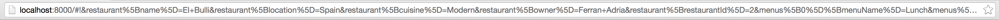
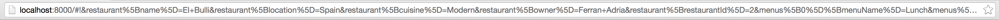

Creating Anchor Tags with helpers and can.route.url
Get the code for: chapter 9 - (This is the completed application).
As mentioned earlier, each property you define on an AppState object will
serialize to a route by default when you bind that AppState object with
can.route, using can.route.map(). In our current AppState,
that means we will have default routes for:
restaurant
menus, and
confirmation
What if we don't want one of our AppState's properties to serialize
to a route? What if you want to change the way the value of the attribute is
serialized? This is where the serialize attribute of a property declared by
the define plugin comes into play.
Open up your application, select a restaurant from the drop down list, then
click the "Place My Order!" button. You should see something similar
to the following in your URL bar:

That's not pretty, and not very useful. We don't want the confirmation or menu
attributes to serialize. It's easy to change this behavior. Open up app.js and
edit the AppState object as follows:
First, let's update the setter so that we can change restaurants by typing
in the correct restaurant name into the hash. Open up site_models and edit
the RestaurantModel as follows:
Add the following code before the call to can.route.ready():
can.route('/:restaurant');
This line tells can.route to match any route going to the restaurant and
format it so that it is a forward slash followed by the serialized value. Add
a serialize property to the restaurant attribute of the AppState
object as follows:
restaurant: {
// ...
serialize: function () {
var name = this.attr('restaurant.name');
return name ? name.replace(/\s/ig, '_') : name;
}
}
We also want to make sure that no other properties show up in the URL bar. In
order to achieve this, all we need to do is set the serialize property of
menus to false.
menus: {
// ...
serialize: false
}
Now, when you select a restaurant and click the "View Order Form" button, you should
see the following in the URL bar:
Finally, update the AppState object in app.js as follows:
Note, that we've refactored the call to RestaurantMenusModel out into its own
function. Now, when you change the value of the restaurant in the URL, the
menu changes as well.
Creating Anchor Tags with helpers and can.route.url
The last thing we need to do is
add functionality to our Site Menu. Open up the site_menu.stache file in
your site_menu components folder. Edit it as follows:
Generally, we want to avoid adding HTML by way of our can.Component code. It
makes changing your views more difficult and removes the abstraction between the
view and view model. We'll be generating the URL in a helper function and keeping
the DOM in the view where it belongs.
Open up site_menu and add the following function to the can.Component:
Here we create a routable URL to place into the view template, using
can.route.url. You should always use can.route.url when generating routable
URLs in your application.
Now, open up your application in the browser (refresh, if you haven't). Select
a restaurant from the list, then click the "View Order Form" button. Once a menu
displays, select some items, fill out the customer details, and click the "Place
My Order" button. A dialog will pop up with your order details that you have
chosen.
In this Chapter
can.route.urlGet the code for: chapter 9 - (This is the completed application).
As mentioned earlier, each property you define on an AppState object will serialize to a route by default when you bind that AppState object with can.route, using
can.route.map(). In our current AppState, that means we will have default routes for:What if we don't want one of our AppState's properties to serialize to a route? What if you want to change the way the value of the attribute is serialized? This is where the
serializeattribute of a property declared by thedefineplugin comes into play.Open up your application, select a restaurant from the drop down list, then click the "Place My Order!" button. You should see something similar to the following in your URL bar:

That's not pretty, and not very useful. We don't want the
confirmationormenuattributes to serialize. It's easy to change this behavior. Open upapp.jsand edit the AppState object as follows:First, let's update the setter so that we can change restaurants by typing in the correct restaurant name into the hash. Open up
site_modelsand edit theRestaurantModelas follows:Next, add the following code to
fixtures.js:Open up
app.jsand edit the AppState object as follows:Add the following code before the call to
can.route.ready():This line tells
can.routeto match any route going to the restaurant and format it so that it is a forward slash followed by the serialized value. Add aserializeproperty to therestaurantattribute of the AppState object as follows:We also want to make sure that no other properties show up in the URL bar. In order to achieve this, all we need to do is set the
serializeproperty ofmenustofalse.Now, when you select a restaurant and click the "View Order Form" button, you should see the following in the URL bar:
Finally, update the AppState object in
app.jsas follows:Note, that we've refactored the call to
RestaurantMenusModelout into its own function. Now, when you change the value of the restaurant in the URL, the menu changes as well.Creating Anchor Tags with helpers and
can.route.urlThe last thing we need to do is add functionality to our Site Menu. Open up the
site_menu.stachefile in yoursite_menu componentsfolder. Edit it as follows:Generally, we want to avoid adding HTML by way of our
can.Componentcode. It makes changing your views more difficult and removes the abstraction between the view and view model. We'll be generating the URL in a helper function and keeping the DOM in the view where it belongs.Open up
site_menuand add the following function to thecan.Component:Here we create a routable URL to place into the view template, using
can.route.url. You should always usecan.route.urlwhen generating routable URLs in your application.Now, open up your application in the browser (refresh, if you haven't). Select a restaurant from the list, then click the "View Order Form" button. Once a menu displays, select some items, fill out the customer details, and click the "Place My Order" button. A dialog will pop up with your order details that you have chosen.
‹ The Define Plugin Recap ›